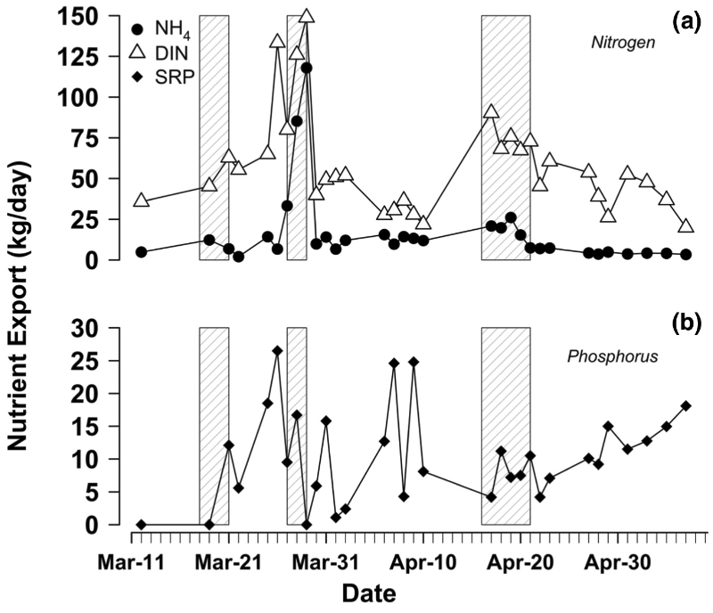
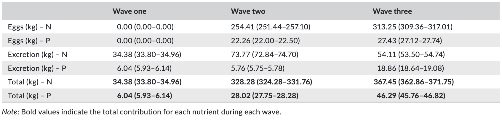
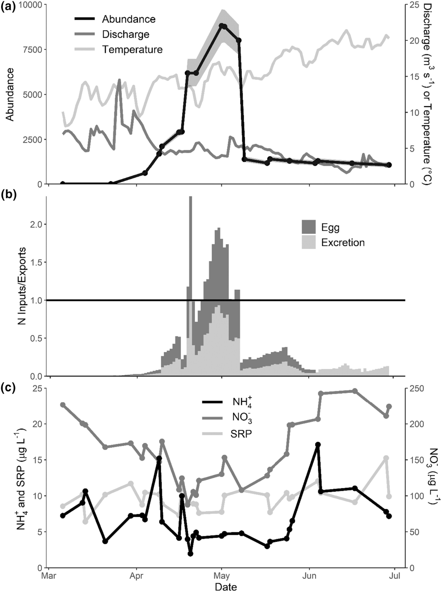

Research
Salmon of the Southeastern U.S.: Sucker migrations deliver resource subsidies to oligotrophic stream
The ability for migratory fishes to move commonly limiting resources such as nitrogen (N) and phosphorus (P) between discrete environments can have pronounced effects on recipient ecosystems. To further understand the geographic and taxonomic scope of migratory fish resource subsidies, we quantified N and P subsidies delivered by ad-fluvial suckers (Smallmouth Buffalo, Ictiobus bubalus) via excretion, eggs and carcasses to a small oligotrophic stream during their annual spawning migration. We also com-pared nutrient inputs from migrant buffalo with watershed nutrient export to assess the likelihood that delivered nutrients were ecologically important. We estimated that approximately 67,000 buffalo delivered 730 kg of N and 80 kg of P to Citico Creek as a result of excretion and egg subsidies across three migration waves. We estimated that carcasses delivered negligible amounts of N and P due to extremely low retention. The ratio of migrant inputs (Mw) to system export (Ew; Mw/Ew) varied among three migration waves and compounds (i.e. dissolved inorganic nitrogen, ammonium and soluble reactive phosphorus), with values for M w/Ew ranging from 0.25 to 5.10, reflecting the potential of nutrient subsidies to exceed nutrients exported from the system under certain conditions. Our findings suggest that suckers have the potential to deliver large resource subsidies to their spawning habitats and that these subsidies may be ecologically important, thus warranting additional consideration of the functional relevance of non-game fishes and their migrations.

Migratory redhorse suckers provide subsidies of nitrogen but not phosphorus to a spawning stream
Spawning migrations of fishes are common case studies for examining the magnitude of resource subsidies; however, no studies have evaluated this phenomenon in iteroparous migrations of the Catostomid (i.e. suckers) genus Moxostoma (i.e. redhorses). Fish resource subsidies are usually represented as nitrogen (N) and phosphorus (P), and migratory redhorses can deliver these nutrients via excretion and eggs. We evaluated whether redhorses deliver N and P subsidies to Brasstown Creek—a fourth-order stream in the Southeastern US during their spawning migrations. We measured individual-level nutrient contributions from excretion and eggs and extrapolated those values to estimate nutrient contributions based on daily abundances of migratory redhorses. We compared daily nutrient inputs to daily nutrient exports to determine the potential for resource subsidies. We estimated 71.6 kg of N and 4.4 kg of P were delivered to Brasstown Creek over a 98-day migration period. N input exceeded N export on 15 of the 98 days, but phosphorus input never exceeded P export. Eggs accounted for the majority of N and P input at 51% and 100% respectively. Redhorse N inputs peaked in the spring during a period of low N exports, suggesting that redhorse subsidies were delivered during times of elevated nutrient demand and relatively low nutrient availability. Suckers receive little management attention, and several species of redhorses are imperiled. Given our conclusion that redhorses provide a temporally critical N subsidy that is likely available to multiple consumers in freshwater food webs, this study provides compelling motivation for increased conservation of these species and their migrations.